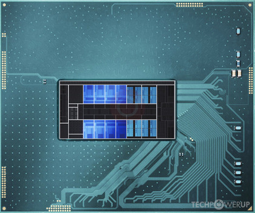

i9 - 13900HX, RTX 4090, 2TB SSD, 64GB RAM
Procesor - i9 13900HX
P-Core-Frekvence: 2.2 GHz
P-Core-Max Frekvence: 5.4 GHz
E-Core-Frekvence: 1.6 GHz
E-Core-Max Frekvence: 3.9 GHz
Počet Jader: 24
Počet Vláken: 32
L1 Casche: 80 KB (1 jádro)
L2 Casche: 2 MB (1 jádro)
L3 Casche: 36 MB
E-Core L1: 96 KB (1 jádro)
E-Core L2: 4 MB (1 modul)
TDP: 55 W
Max TDP: 157 W
Socket: Intel BGA 1964
Výrobní Technologie: 10 nm
Grafická Karta
Počet Stream Procesorů: 9 728x
Výrobní Technologie: 5nm
Architektura Čipu: Ada Lovelace
Grafický Procesor: AD103
Velikost VRAM: 16GB
Typ Paměti: GDDR6
Šířka Sběrnice: 256-Bit
Frekvence Jádra: 1335 MHz
Frekvence Paměti: 2250 MHz (18 Gbps)
TDP: 120 W
